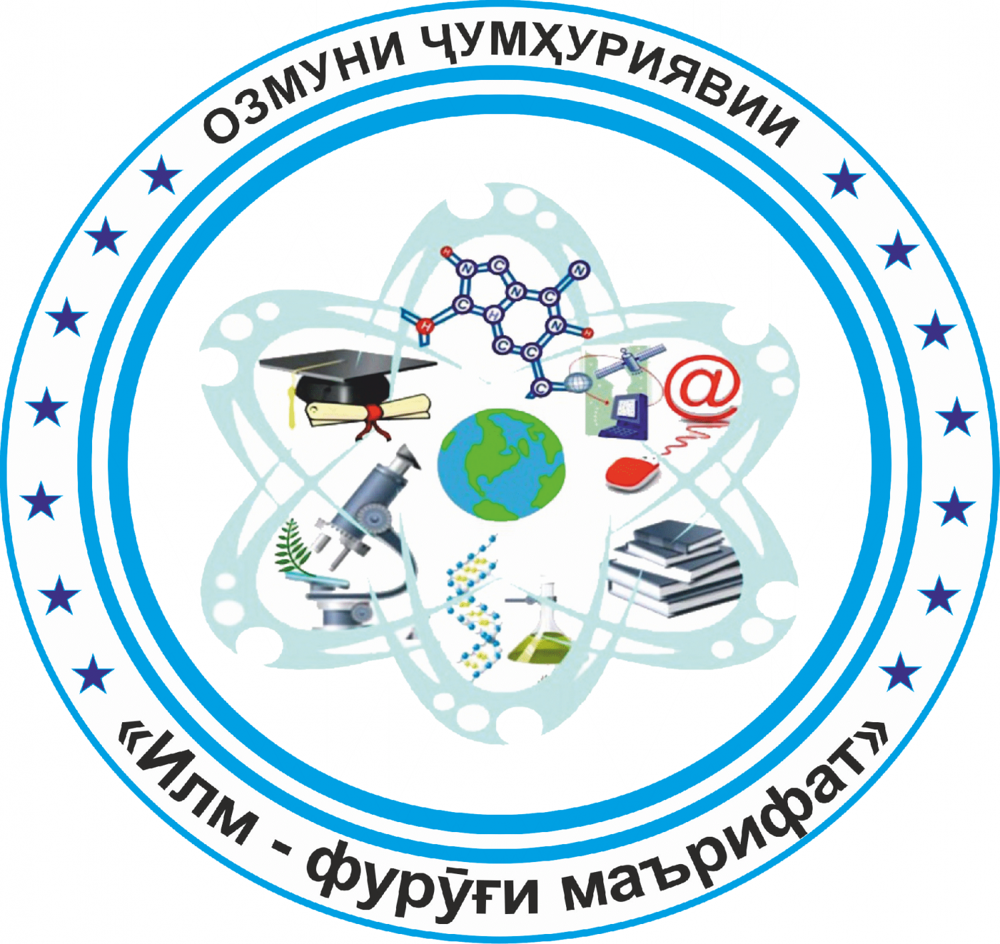

← Бозгашт
«Илм-фурӯғи маърифат» · 2026

ОЗМУНИ ҶУМҲУРИЯВИИ
«Илм-фурӯғи маърифат»
Соли 2026 · таҳти сарпарастии Президенти Ҷумҳурии Тоҷикистон№АП-950 аз «1» январи соли 2026
АМРИ
Дар бораи баргузории Озмуни ҷумҳуриявии «Илм-фурӯғи маърифат»
1. Дар соли 2026 Озмуни ҷумҳуриявии «Илм-фурӯғи маърифат» баргузор карда шавад.
2. Низомнома, ҳайати комиссия ва ҷоизаи Озмуни ҷумҳуриявии «Илм-фурӯғи маърифат» тасдиқ карда шаванд (замимаҳои 1, 2 ва 3).
3. Вазорати маориф ва илми Ҷумҳурии Тоҷикистон, Академияи миллии илмҳои Тоҷикистон, вазоратҳои фарҳанг, саноат ва технологияҳои нав, рушди иқтисод ва савдо, кишоварзӣ, кумитаҳои телевизион ва радио, кор бо ҷавонон ва варзиш, кор бо занон ва оила, оид ба таҳсилоти ибтидоӣ ва миёнаи касбӣ, Агентии инноватсия ва технологияҳои рақамӣ, Маркази миллии тестии назди Президенти Ҷумҳурии Тоҷикистон, Саридораи геологияи назди Ҳукумати Ҷумҳурии Тоҷикистон барои дар сатҳи баланд доир гардидани Озмуни мазкур чораҳои зарурӣ андешанд.
4. Мақомоти иҷроияи ҳокимияти давлатии Вилояти Мухтори Кӯҳистони Бадахшон, вилоятҳои Хатлону Суғд, шаҳри Душанбе, шаҳру ноҳияҳо, роҳбарони муассисаҳои илмию таҳқиқотӣ ва муассисаҳои таҳсилоти миёна ва олии касбӣ иҷрои талаботи амри мазкурро таъмин намуда, барои ҷалби бештари хонандагону донишҷӯён, аспирантону докторантон ва қишрҳои дигари ҷомеа, ки ба омӯзиши фанҳои риёзӣ, дақиқ ва табиӣ, инчунин ихтироъкориву навоварӣ шавқу рағбат доранд, чораҷӯйӣ карда, ғолибонро бо ҷоиза ва омӯзгорони онҳоро аз ҷиҳати моддӣ ва маънавӣ ҳавасманд гардонанд.
5. Вазорати молияи Ҷумҳурии Тоҷикистон аз ҳисоби маблағҳои фонди захиравии Президенти Ҷумҳурии Тоҷикистон, ки барои соли 2026 пешбинӣ гардидаанд, ба Дастгоҳи иҷроияи Президенти Ҷумҳурии Тоҷикистон ҷиҳати баргузории Озмуни мазкур 9 870 000 (нуҳ миллиону ҳаштсаду ҳафтод ҳазор) сомонӣ ба таври нақд ҷудо намояд.
6. Дастгоҳи иҷроияи Президенти Ҷумҳурии Тоҷикистон истифодаи мақсадноки маблағи ҷудошударо таъмин карда, оид ба хароҷоти анҷомдода ба Вазорати молияи Ҷумҳурии Тоҷикистон ҳисобот пешниҳод намояд.
7. Назорати иҷрои амри мазкур ба зиммаи муовини Сарвазири Ҷумҳурии Тоҷикистон (сарпарасти соҳа) гузошта шавад.
↑ Ба мундариҷа
1 МУҚАРРАРОТИ УМУМӢ1. Озмуни ҷумҳуриявии «Илм-фурӯғи маърифат» (минбаъд — Озмун) таҳти сарпарастии Президенти Ҷумҳурии Тоҷикистон бо мақсади амалисозии «Бистсолаи омӯзиш ва рушди фанҳои табиатшиносӣ, дақиқ ва риёзӣ дар соҳаи илму маориф» баргузор карда мешавад.
2. Озмун бо мақсади рушди тафаккури техникӣ, тарғиби ҷаҳонбинии илмӣ, дастрасӣ пайдо кардан ба техникаву технология, тавсеаи ихтироъкорӣ ва навоварӣ, пайвасти илм бо истеҳсолот, ҷалби бештари хонандагону донишҷӯён ва дигар қишрҳои ҷомеа ба омӯзиши фанҳои риёзӣ, дақиқ ва табиӣ, ҳамчунин дарёфт ва муаррифии истеъдодҳои нав дар ин самтҳо байни хонандагони муассисаҳои таҳсилоти миёнаи умумӣ бо тақсимот ба ду гурӯҳ дар алоҳидагӣ — муассисаҳои таҳсилоти миёнаи умумӣ ва муассисаҳои таҳсилоти миёнаи умумии шакли нав (литсейҳо, гимназияҳо ва муассисаҳои таълимии президентӣ ва хусусӣ), хонандагону донишҷӯёни муассисаҳои таҳсилоти ибтидоӣ, миёна ва олии касбӣ (бакалаврон ва магистрон), ходимони илмӣ, аспирантон, докторантон, унвонҷӯён, докторантҳо аз рӯйи ихтисос ва докторантони ҳабилитат, омӯзгорони муассисаҳои таълимии ҳамаи зинаҳои таҳсилот, муҳандисон, конструкторон ва дигар намояндагони касбу кори гуногун баргузор мегардад.
3. Озмун аз рӯйи ҳашт номинатсия гузаронида мешавад:
📐 математика (арифметика, алгебра, геометрия);
🔭 физика ва астрономия;
🧪 химия;
🌱 биология (ботаника, зоология, анатомия);
🌍 география;
💻 технологияи иттилоотӣ;
🤖 зеҳни сунъӣ ва барномасозӣ;
⚙️ ихтироъкорӣ ва навоварӣ.
4. Довталабони озмун ба гурӯҳҳои зерин ҷудо карда мешаванд:
гурӯҳи якум — хонандагони муассисаҳои таҳсилоти миёна умумӣ ва ибтидоии касбӣ;гурӯҳи дуюм — хонандагони муассисаҳои таҳсилоти миёна умумии типи нав (литсейҳо, гимназияҳо ва муассисаҳои таълимии президентӣ ва хусусӣ);гурӯҳи сеюм — донишҷӯёни муассисаҳои таҳсилоти миёна ва олии касбӣ (ба истиснои магистрантон, таҳсили ғоибона ва маълумоти дуюм);гурӯҳи чорум — магистрантон, ходимони илмӣ, аспирантон, докторантон, унвонҷӯён, докторантҳо аз рӯйи ихтисос ва докторантони ҳабилитат, омӯзгорони муассисаҳои таълимии ҳамаи зинаҳои таҳсилот, муҳандисон, конструкторон ва намояндагони дигари касбу кори гуногун — метавонанд танҳо дар ду номинатсия иштирок намоянд: зеҳни сунъӣ ва барномасозӣ ва ихтироъкорӣ ва навоварӣ .
↑ Ба мундариҷа
2 САРПАРАСТ ВА МАСЪУЛОНИ ОЗМУН5. Сарпарасти Озмун — Президенти Ҷумҳурии Тоҷикистон .
6. Масъулони баргузории Озмун: Вазорати маориф ва илм, Академияи миллии илмҳо, вазоратҳои саноат ва технологияҳои нав, рушди иқтисод ва савдо, кишоварзӣ, Агентии инноватсия ва технологияҳои рақамӣ, Кумита оид ба таҳсилоти ибтидоӣ ва миёнаи касбӣ, Маркази миллии тестӣ ва Саридораи геология мебошанд.
7. Кумитаҳои телевизион ва радио, кор бо ҷавонон ва варзиш, кор бо занон ва оила, Агентии миллии иттилоотии Тоҷикистон «Ховар» ва нашрияҳои давлатӣ дар тарғиб, ҷалб ва ҷараёни баргузории Озмун иштирок мекунанд.
8. Мақомоти иҷроияи ҳокимияти давлатии ВМКБ, вилоятҳои Хатлону Суғд, шаҳри Душанбе, шаҳру ноҳияҳо, роҳбарони муассисаҳои илмию таҳқиқотӣ, таҳсилоти ибтидоӣ, миёна ва олии касбӣ ҷиҳати дар сатҳи баланд ташкил ва баргузор намудани даврҳои якум, дуюм ва сеюми Озмун масъул буда, ғолибон, омӯзгорон ва волидайни онҳоро аз ҷиҳати моддӣ ва маънавӣ ҳавасманд мегардонанд.
9. Дар ВМКБ, вилоятҳои Хатлону Суғд, шаҳри Душанбе, шаҳру ноҳияҳо раёсат, шуъба ва бахшҳои рушди иҷтимоӣ ва робита бо ҷомеа, маориф, фарҳанг, кор бо ҷавонон ва варзиш, занон ва оила ва дар муассисаҳои илмию таҳқиқотӣ, муассисаҳои таҳсилоти миёнаи умумӣ, ибтидоӣ, миёна ва олии касбӣ роҳбарони онҳо масъули ташкил ва баргузории Озмун мебошанд.
↑ Ба мундариҷа
3 КОМИССИЯИ ОЗМУН10. Барои гузаронидани Озмуни «Илм-фурӯғи маърифат» комиссияи ҷумҳуриявӣ (минбаъд — комиссияи Озмун) таъсис дода мешавад, ки ҳайати он бо амри Президенти Ҷумҳурии Тоҷикистон муқаррар мегардад.
11. Ваколати комиссияи Озмун:
таҳияи ҷадвали баргузории Озмун ва назорати он;
тасдиқи тартиб, талабот ва тавзеҳот оид ба Озмун;
муайян намудани ҷойи баргузории даври сеюм ва чоруми Озмун;
тасдиқи ҳайати ҳакамон барои даврҳои сеюм ва чоруми Озмун;
гузаронидани семинарҳои машваратӣ барои ҳайати ҳакамон ва масъулони гузаронидани Озмун дар тамоми даврҳо;
назорати риояи талабот ва пешниҳоди тавсияҳо ба довталабони Озмун;
омӯзиш ва тавсияи ҳуҷҷатҳои пешниҳодшудаи иштирокдорони Озмун ба даври чорум;
таъсиси комиссияи апеллятсионӣ;
баррасии пешниҳодҳои ҳайати ҳакамон ва арзу шикояти довталабон ва иштирокдорон;
тасдиқ ва эълони натиҷаи хулосаи ҳайати ҳакамони Озмуни даври сеюм ва чорум;
ҷамъбасти натиҷаи ниҳоӣ ва пешниҳоди он ба Президенти Ҷумҳурии Тоҷикистон барои маълумот ва шиносоӣ.
↑ Ба мундариҷа
4 ТАРТИБИ БАРГУЗОРИИ ОЗМУН12. Озмун аз чор давр иборат буда, моҳҳои апрел — ноябр ба таври зайл ташкил ва гузаронида мешавад:
Даври якум — моҳи апрел дар муассисаҳои таълимӣ, муассисаҳои илмӣ ва дигар ташкилотҳо;Даври дуюм — нимаи дуюми моҳи май дар маркази шаҳр ва ноҳияҳо;Даври сеюм — нимаи якуми моҳи сентябр дар ВМКБ, вилоятҳои Хатлону Суғд, шаҳри Душанбе ва шаҳру ноҳияҳои тобеи ҷумҳурӣ;Даври чорум — даври ҷумҳуриявӣ, нимаи дуюми моҳи октябр дар ҳамкорӣ бо Маркази миллии тестӣ. Даври мазкур аз ду қисм иборат: қисми аввал — тавассути Маркази миллии тестӣ, қисми дуюм — аз ҷониби аъзои ҳакамон. Довталабоне, ки аз рӯйи саволномаҳои Маркази тестӣ камтар аз 50% хол гирифтаанд, дар қисми дуюм иштирок карда наметавонанд.
13. Протоколи ҳайати ҳакамони даври сеюм ба даври чорум бо имзои раиси ВМКБ, вилоятҳои Хатлону Суғд, шаҳри Душанбе ва шаҳру ноҳияҳои тобеи ҷумҳурӣ, роҳбарони муассисаҳои таълимӣ, илмӣ ва раиси ҳакамон ба комиссияи Озмун пешниҳод мешавад.
14. Ҷойи баргузории даврҳои якуму дуюм ва сеюми Озмун аз ҷониби мақомоти иҷроияи маҳаллии ҳокимияти давлатӣ ва дар муассисаҳои илмию таҳқиқотӣ, таҳсилоти ибтидоӣ, миёна ва олии касбӣ аз тарафи роҳбарони онҳо муайян карда мешавад.
15. Масъулияти баргузории даврҳои якум, дуюм ва сеюм ба зиммаи мақомоти иҷроияи ҳокимияти давлатии ВМКБ, вилоятҳои Хатлону Суғд, шаҳри Душанбе, шаҳру ноҳияҳо, роҳбарони муассисаҳои илмию таҳқиқотӣ, таҳсилоти ибтидоӣ, миёна ва олии касбӣ вогузор карда мешавад.
16. Ҷараёни баргузории даврҳои якум, дуюм, сеюм ва чоруми Озмун тавассути воситаҳои ахбори омма васеъ инъикос ва пахш мегарданд. Ҷараёни баргузории даври чорум пурра тавассути телевизионҳои давлатӣ сабт ва намоиш дода мешавад.
17. Ҷиҳати баргузории даврҳои сеюм ва чоруми Озмун Нақшаи чорабиниҳо бо фарогирии тамоми масъалаҳои Озмун таҳия гардида, аз ҷониби раиси Комиссияи ҷумҳуриявии Озмун тасдиқ карда мешавад.
18. Муҳлати пешниҳоди ҳуҷҷатҳои ғолибони ҷойҳои якум, дуюм ва сеюми даври сеюм барои иштирок дар даври чорум ба комиссияи Озмун то 1-уми октябр муқаррар карда мешавад. Дар ҳар як даври Озмун 6 ғолиб : ҷойҳои якум — 1 нафар, дуюм — 2 нафар ва сеюм — 3 нафар муайян карда мешавад.
19. Миёни роҳбари муассисаи таълимӣ, омӯзгор ва довталаб (дар шахси падару модар ё сарпарасти ӯ) аз даври дуюми Озмун метавонад шартнома ҷиҳати омода намудани довталаб ба имзо расонида шавад.
20. Вазорати маориф ва илм, Академияи миллии илмҳо, Вазорати фарҳанг, Кумитаи телевизион ва радио масъули раванди гузаронидани маросими тантанавии супоридани ҷоизаҳо ба ғолибони даври чоруми Озмун мебошанд.
↑ Ба мундариҷа
5 ШАРТҲОИ ИШТИРОК ДАР ОЗМУН21. Дар Озмун хонандагони муассисаҳои таҳсилоти миёнаи умумӣ бо ду гурӯҳ дар алоҳидагӣ — муассисаҳои таҳсилоти миёнаи умумӣ ва муассисаҳои таҳсилоти миёнаи умумии типи нав (литсейҳо, гимназияҳо ва муассисаҳои таълимии президентӣ ва хусусӣ), хонандагону донишҷӯёни муассисаҳои таҳсилоти ибтидоӣ, миёна ва олии касбӣ, магистрантон, ходимони илмӣ (ба истиснои докторони илм, профессорон, аъзои вобаста ва пайвастаи Академияи миллии илмҳо), аспирантон, докторантон, унвонҷӯён, омӯзгорони муассисаҳои таълимии ҳамаи зинаҳои таҳсилот, муҳандисон, конструкторон ва намояндагони дигари касбу кори гуногун иштирок карда метавонанд.
22. Шартҳои ташкил ва баргузории Озмун аз ҷониби комиссияи Озмун назорат карда мешавад.
23. Довталаб 10 рӯз пеш аз оғози Озмун санадҳои зеринро бо ариза ба комиссияи Озмун пешниҳод менамояд:
маълумотномаи ягонаи довталаб (мувофиқи шакли аз ҷониби котиботи Озмун пешниҳодшуда);
тарҷумаи ҳол (шакли тасдиқшудаи намунаи он аз ҷониби масъулини Озмун пешниҳод мешавад);
4 дона сурати 3×4;
маълумотнома аз макони зист ё ҷойи таҳсил;
маълумотнома доир ба ихтисос, патент ё шаҳодатномаи муаллифӣ (барои номинатсияҳои зеҳни сунъӣ ва барномасозӣ, ихтироъкорӣ ва навоварӣ);
нусхаи шиноснома.
24. Бақайдгирии ғолибони даврҳои дуюм ва сеюми Озмунро сардорони раёсат ва мудирони шуъбаҳои маорифи вилоят ва шаҳру ноҳияҳо дар Портали электронии Вазорати маориф ва илм таъмин менамоянд. Котиби масъули комиссия суроға, рӯз ва ҷойи баргузории Озмунро ба довталабон тавассути воситаҳои ахбори омма эълон менамояд.
25. Ғолиби даври чоруми Озмун, ки сазовори ҷойҳои якум, дуюм, сеюм ва барандаи Шоҳҷоиза гардидааст, то се сол дар Озмун ва минбаъд дар номинатсияи ғолибомадааш ҳуқуқи иштирок карданро надорад.
26. Барои иштирок дар даври чоруми Озмун ба комиссияи Озмун иловатан ҳуҷҷатҳои зерин дар шакли хаттӣ ва электронӣ пешниҳод карда мешаванд:
маълумоти мухтасар дар бораи довталаб;
нусхаи патент ва ё шаҳодатномаи муаллифӣ;
нусхаи шаҳодатномаи бақайдгирии давлатии захираи иттилоотӣ ва маълумотномаи Вазорати фарҳанг;
номгӯйи дастгоҳ ва таҷҳизоти ихтироъшуда;
барномаи таҳияшудаи компютерӣ;
пешниҳодҳои хусусияти навоваридошта.
↑ Ба мундариҷа
6 ТАЛАБОТ БА ИШТИРОКЧИЁНИ ОЗМУН27. Донишу истеъдоди иштирокчиёни Озмун аз рӯйи донишҳои назариявии донистани қонуну қоидаҳо, теоремаву аксиомаҳо, назарияҳо, дуруст фаҳмонида додани моҳияти ҳодисаҳо ва равандҳои табиат, ҳалли масъалаҳои амалӣ ва корҳои озмоишӣ, инчунин намоиши дастоварди илмӣ ва навовариҳо муайян карда мешавад.
Агар иштирокчӣ ҳамчун хонандаи муассисаи таҳсилоти миёнаи умумӣ дар даврҳои якуму дуюм ва сеюм ба қайд гирифта шуда бошад ва дар даври чорум донишҷӯйи муассисаҳои таҳсилоти олии касбӣ шуда бошад, ҳамчун хонанда дар даври чорум иштирок мекунад.
28. Як шахс танҳо дар як номинатсия аз номи як муассиса ё маҳалли зист дар Озмун иштирок карда метавонад.
↑ Ба мундариҷа
7 МЕЪЁРҲОИ АРЗЁБИИ ҒОЛИБОНИ ОЗМУН29. Вобаста ба номинатсия пешниҳоди супоришҳои Озмун (10 супориш ё саволу масъала ) дар шакли зерин сурат мегирад:
Математика — 40% назариявӣ ва 60% амалӣ;Физика ва астрономия — 40% назариявӣ ва 60% амалӣ-озмоишӣ (80% физика, 20% астрономия);Химия — 30% назариявӣ, 50% хаттӣ-амалӣ ва 20% озмоишӣ;Биология — 40% назариявӣ, 40% амалӣ ва 20% озмоишӣ;География — 50% назариявӣ ва 50% амалӣ;Технологияи иттилоотӣ — 30% назариявӣ ва 70% амалӣ;Зеҳни сунъӣ ва барномасозӣ — аз рӯйи пешниҳоди барномаҳои нави компютерӣ ва мобилии таҳияшуда ва барномаҳои идоракунандаи зеҳни сунъӣ;Ихтироъкорӣ ва навоварӣ — аз рӯйи пешниҳоди ихтироот ва навоварӣ, аз ҷумла дастгоҳу таҷҳизот, техникаву технология, навъу намунаҳои нави зироат, дарахту буттаҳо ва маводди доруворӣ.
30. Ҷадвали 100-холӣ муқаррар карда шуда, ҳайати ҳакамон аз рӯйи меъёрҳои зерин баҳо медиҳанд:
барои ҷавоби пурра ба саволҳои назариявӣ, дуруст пешниҳод намудани қонуну қоидаҳо, теорема ва аксиомаҳо, моҳияти ҳодисаҳои табиат, дуруст ҳал кардани мисолу масъалаҳо — то 10 хол ; ҷавоби аз хуб болотар — то 8; ҷавоби хуб — то 6; аз миёна беҳтар — то 4; миёна — то 3; заиф — то 2; ғайриқаноатбахш — хол дода намешавад;
барои номинатсияи зеҳни сунъӣ ва барномасозӣ — то 100 хол ба барномаҳои компютерӣ ва мобилӣ, барномаҳои идоракунии зеҳни сунъие дода мешавад, ки бо шаҳодатномаи бақайдгирии давлатӣ ҳифз шуда, дар истеҳсолот ҷорӣ шудаанд ё имкони ҷорӣ шуданро доранд; барои барнома бе шаҳодатнома — то 80; барои алгоритми кор ва сохтани барнома — то 6; барои саволи назариявӣ — то 4-2;
барои ихтироъкорон — то 100 хол ба ихтирооте, ки бо патент байналмилалӣ ё ҷумҳуриявӣ ҳифз шудааст, дар истеҳсолот ҷорӣ шудааст ё имкони ҷорӣ шуданро дорад. То 80 — ихтирое бо хусусиятҳои навоварӣ бе патент; то 60 — ихтирое бо унсурҳои навоварӣ; то 50 — конструксияҳои муайян; то 30 — намунаҳои аллакай мавҷуда;
саволҳои назариявӣ дар шакли хаттӣ пешниҳод мешаванд;
холи натиҷавӣ дар асоси қимати миёна -и холҳои ҳар як узви ҳайати ҳакамон ҳисоб мешавад.
31. Дар тамоми номинатсияҳо ҷойҳои якум, дуюм ва сеюм тибқи ҷадвали зерин дода мешаванд:
аз 75 то 100 хол — ҷойи якум;аз 60 то 75 хол — ҷойи дуюм;аз 50 то 60 хол — ҷойи сеюм.
Дар сурати камтар аз 75% хол гирифтан, ҷойи якум дода намешавад.
↑ Ба мундариҷа
8 ҲАЙАТИ ҲАКАМОН31. Шумора ва ҳайати ҳакамонро комиссияи Озмун муайян мекунад.
32. Ҳайати ҳакамони Озмун дар ВМКБ, вилоятҳои Хатлону Суғд, шаҳри Душанбе ва шаҳру ноҳияҳо корҳои зеринро иҷро мекунанд:
тибқи пешниҳоди комиссияи Озмун донишу истеъдоди иштирокдоронро натиҷагирӣ мекунанд;
холҳоро муқаррар карда, бо овоздиҳии кушода ғолибро муайян менамоянд;
натиҷаи Озмунро дар протокол дарҷ намуда, бо имзои аъзои ҳакамон тасдиқ менамоянд.
33. Ба ҳайати ҳакамон намояндагони раёсат, шуъба ва бахшҳои мақомоти иҷроияи маҳаллӣ, омӯзгорон, олимону муҳаққиқон ворид мешаванд.
34. Шахсе, ки шогирд ё узви оилаи ӯ дар Озмун иштирок мекунад, ҳуқуқи ба ҳайати ҳакамон шомил гардиданро надорад .
35. Хулосаи ҳайати ҳакамони даврҳои сеюм ва чорум дар комиссияи Озмун баррасӣ ва тасдиқ карда мешавад.
36. Комиссияи Озмун дар ҳолати ҷавобгӯй набудани хулосаи ҳайати ҳакамон ба талаботи Низомнома (дар ҳолатҳои истисноӣ ва ё муайян гардидани иштибоҳоти техникӣ) ҳуқуқи бекор кардани онро дорад.
37. Ҳайати ҳакамони даври ниҳоии Озмун бо инобати мутахассисон аз ҳамаи муассисаҳои илмӣ ва таҳсилоти олии касбии соҳавии кишвар таъин карда мешаванд.
↑ Ба мундариҷа
9 ТАРТИБИ ПЕШНИҲОД БАРОИ ДАРЁФТИ ШОҲҶОИЗА38. Барои дарёфти Шоҳҷоиза довталабе роҳ дода мешавад, ки дар даври ҷумҳуриявӣ аз рӯйи номинатсияи ихтироъкорӣ ва навоварӣ , зеҳни сунъӣ ва барномасозӣ ҷойи якум -ро сазовор гардидааст.
39. Агар барандаи Шоҳҷоиза намоянда аз табақаҳои касбу кори гуногун бошад, бо пешниҳоди комиссияи Озмун бо тартиби муқарраргардида бо мукофоти соҳавӣ сарфароз гардонида мешавад.
↑ Ба мундариҷа
10 ТАЪМИНОТИ МОЛИЯВИИ ОЗМУН40. Хароҷоти даврҳои якум, дуюм, сеюм, таъмини сафархарҷӣ ва будубоши ҳайати ҳакамон, инчунин хароҷоти сафарбаркунӣ ва будубоши ғолибон ва омӯзгорони онҳо ба даври чоруми Озмун аз ҳисоби буҷети мақомоти иҷроияи ҳокимияти давлатии ВМКБ, вилоятҳои Хатлон ва Суғд, шаҳри Душанбе ва шаҳру ноҳияҳо ва сарчашмаҳои дигари маблағгузории бо қонунгузорӣ манънагардида пардохт карда мешавад.
41. Ғолибони даврҳои якум, дуюм, сеюми Озмун ва омӯзгорону волидони онҳо аз ҷониби мақомоти иҷроияи маҳаллӣ ва ташкилоту муассисаҳо ба таври моддию маънавӣ ҳавасманд гардонида мешаванд.
42. Раисони ВМКБ, вилоятҳои Хатлон ва Суғд, шаҳри Душанбе, шаҳру ноҳияҳо, роҳбарони муассисаҳои илмию таҳқиқотӣ ғолибони даврҳои якум, дуюм ва сеюми Озмунро бо мукофотҳо сарфароз мегардонанд.
43. Ба ғолибони даври чоруми Озмун ва барандаи Шоҳҷоиза, инчунин ҳайати ҳакамон ва мутахассисон аз ҳисоби маблағҳои фонди захиравии Президенти Ҷумҳурии Тоҷикистон ҷоиза ва мукофоти пулӣ дода мешавад.
44. Ҷоиза ва мукофоти пулии ғолибони Озмун ва омӯзгорони онҳо дар маросими тантанавӣ аз ҷониби аъзои комиссияи Озмун ва дигар шахсони расмӣ супорида мешавад.
45. Барои ҳавасмандгардонии ғолибон ва омӯзгорон ҷалби сарпарастон тибқи қонунгузорӣ иҷозат дода мешавад.
46. Иштирокчиёни ҷойҳои 4, 5, 6 даври чоруми Озмун бо нишони «Илм ва инноватсия» ва «Ифтихорнома»-и Вазорати маориф ва илм сарфароз гардонида мешаванд.
47. Падару модароне, ки фарзандони онҳо дар даври чорум ҷойҳои якум, дуюм ва сеюмро ба даст меоранд, соҳиби нишони «Маърифатпарвар» ва «Ифтихорнома»-и Вазорати маориф ва илм мегарданд.
48. Омӯзгороне, ки шогирдони онҳо дар даври чорум барандаи Шоҳҷоиза ва сазовори ҷойҳои якум, дуюм ва сеюм мегарданд, бо мукофоти пулӣ сарфароз гардонида мешаванд.
49. Хароҷоти баргузории чорабинии даври чоруми Озмун аз суратҳисоби махсуси Вазорати маориф ва илм пардохт карда мешавад.
↑ Ба мундариҷа
11 ИМТИЁЗҲО50. Ғолибони даври чорум (ҷойҳои 1, 2, 3 ) ва барандаи Шоҳҷоиза баъди хатми муассисаи таҳсилоти миёнаи умумӣ, ибтидоӣ, миёна ва олии касбӣ ба ихтисоси интихобкардаи худ ба муҳлати се сол бе супоридани имтиҳон ба муассисаҳои таҳсилоти миёна ва олии касбии кишвар ба гурӯҳҳои ройгон қабул карда мешаванд.
51. Иштирокдорони даври чоруми Озмун дар давоми се сол ба ихтисосҳои фанҳои риёзӣ, дақиқу табиатшиносӣ ва техникӣ ба муассисаҳои таҳсилоти миёна ва олии касбии кишвар бе супоридани имтиҳон ба гурӯҳҳои ройгон қабул карда мешаванд.
52. Омӯзгороне, ки шогирдонашон дар байни хонандагон сазовори ҷойҳои 1, 2, 3 мегарданд, соҳиби унвони «Аълочии маориф ва илми Тоҷикистон» мегарданд.
53. Вазорати маориф ва илм протокол ва санадҳои ғолибони Озмунро дар асоси таҳияи тартиби махсус барои 10 сол нигоҳдорӣ намуда, баъдан ба бойгонӣ месупорад.
↑ Ба мундариҷа
З2 ҲАЙАТИ КОМИССИЯИ ОЗМУН
Замимаи 2 ба амри Президенти Ҷумҳурии Тоҷикистон
Раёсати комиссия:
Муовини Сарвазири Ҷумҳурии Тоҷикистон (сарпарасти соҳа) — раиси комиссияи Озмун ;
Вазири маориф ва илми Ҷумҳурии Тоҷикистон — муовини раиси комиссия ;
Президенти Академияи миллии илмҳои Тоҷикистон — муовини раиси комиссия ;
Муовини вазири маориф ва илми Ҷумҳурии Тоҷикистон — котиби комиссия .
Аъзои комиссия:
Сардори раёсати маориф, фарҳанг ва иттилооти Дастгоҳи иҷроияи Президенти Ҷумҳурии Тоҷикистон;
Мушовири бахши ёрдамчии Президенти Ҷумҳурии Тоҷикистон оид ба масъалаҳои рушди иҷтимоӣ ва робита бо ҷомеа;
Вазири рушди иқтисод ва савдои Ҷумҳурии Тоҷикистон;
Раиси Кумитаи телевизион ва радиои назди Ҳукумати Ҷумҳурии Тоҷикистон;
Раиси Кумитаи кор бо ҷавонон ва варзиши назди Ҳукумати Ҷумҳурии Тоҷикистон;
Раиси Кумита оид ба таҳсилоти ибтидоӣ ва миёнаи касбии назди Ҳукумати Ҷумҳурии Тоҷикистон;
Муовини якуми вазири саноат ва технологияҳои нави Ҷумҳурии Тоҷикистон;
Муовини соҳавии раиси шаҳри Душанбе;
Директори Агентии инноватсия ва технологияҳои рақамии назди Президенти Ҷумҳурии Тоҷикистон;
Сардори Саридораи геологияи назди Ҳукумати Ҷумҳурии Тоҷикистон;
Директори Маркази миллии тестии назди Президенти Ҷумҳурии Тоҷикистон;
Президенти Академияи илмҳои кишоварзии Тоҷикистон;
Ректори Донишгоҳи миллии Тоҷикистон;
Ректори Донишгоҳи техникии Тоҷикистон ба номи академик М. Осимӣ.
↑ Ба мундариҷа
З3 ҶОИЗАҲОИ ОЗМУН
Замимаи 3 ба амри Президенти Ҷумҳурии Тоҷикистон
Мукофотҳои пулӣ барои ғолибони Озмун аз рӯйи чор гурӯҳ , ҳашт номинатсия ва як Шоҳҷоиза муқаррар карда мешаванд:
💰 БУҶЕТИ УМУМИИ ОЗМУН
9 870 000 сомонӣ
(нуҳ миллиону ҳаштсаду ҳафтод ҳазор)
↑ Ба мундариҷа
🔬 Низомномаи Озмуни ҷумҳуриявии «Илм-фурӯғи маърифат»
Соли 2026 · Ҷумҳурии Тоҷикистон
© Китобхона · Манбаи дониш